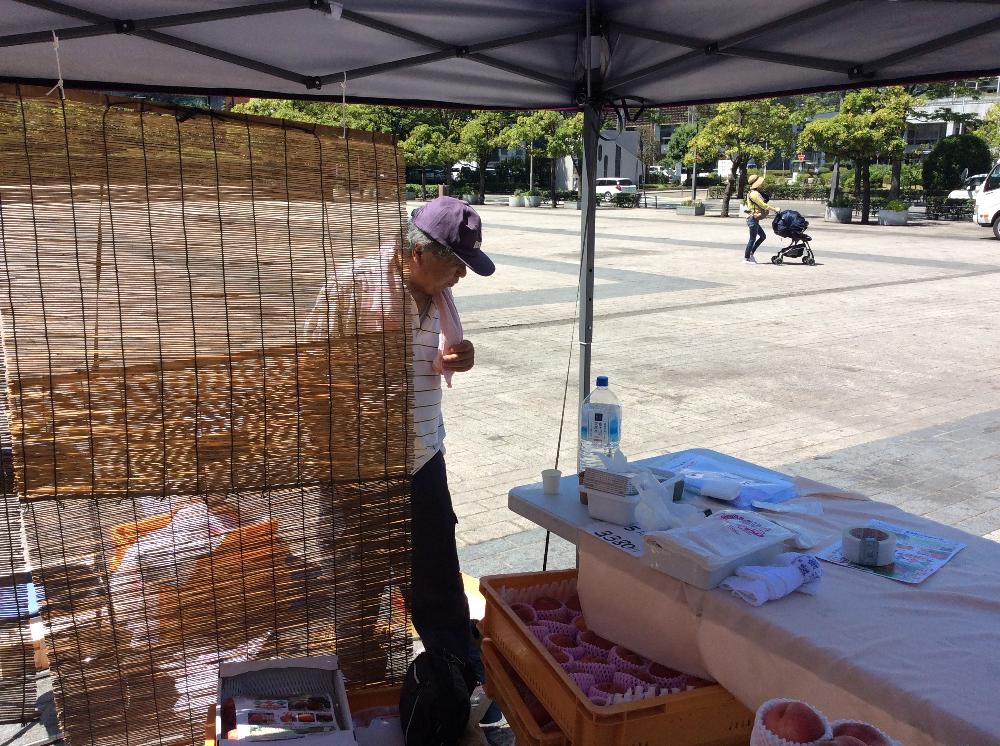
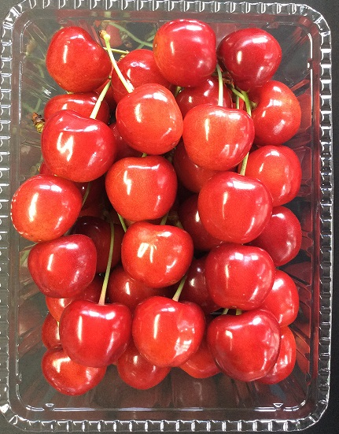
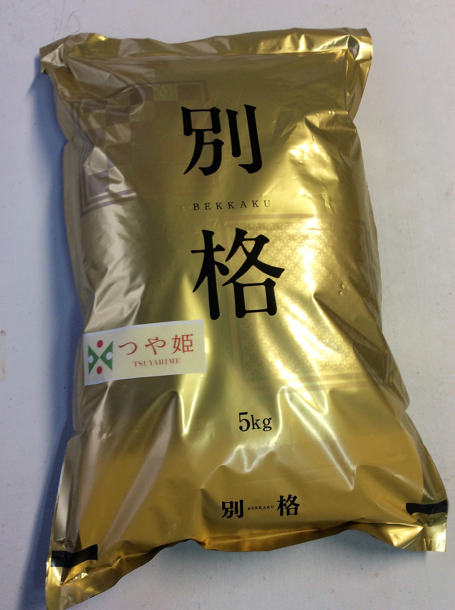
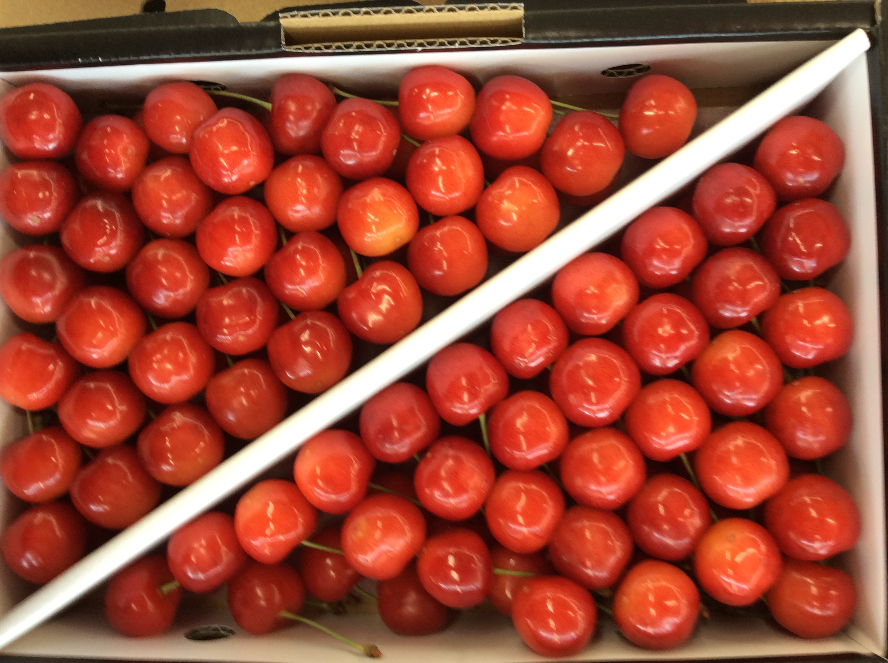
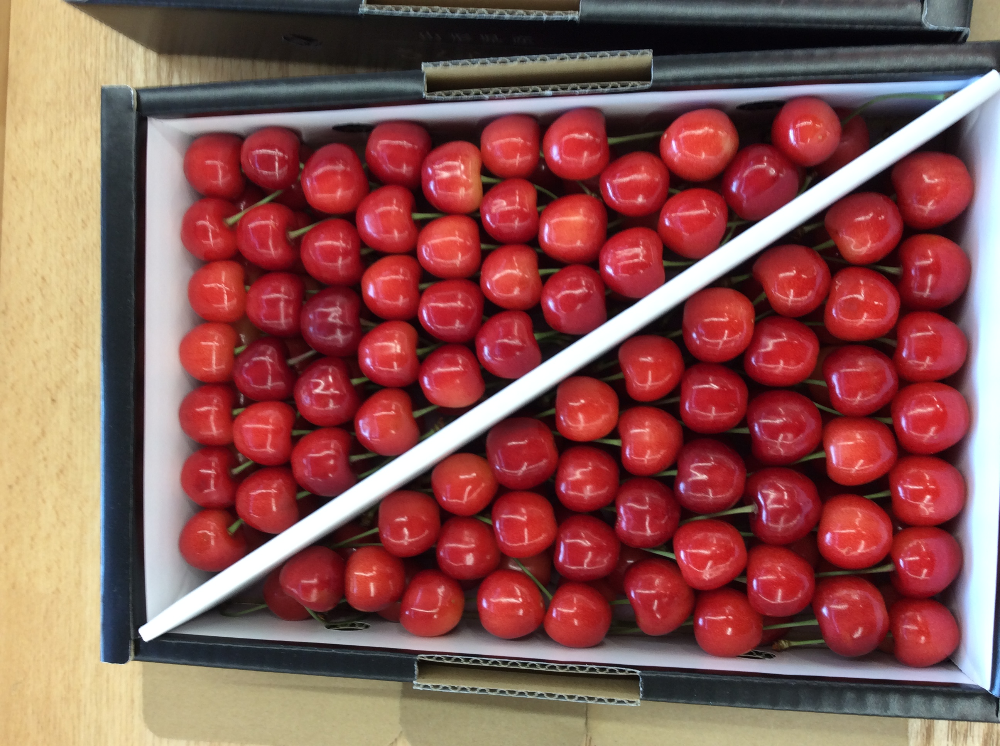

山形の恵みを、
まっすぐ食卓へ。
太郎右ェ門農園は、山形の自然に育まれた さくらんぼ・お米・ラ・フランス・桃をお届けする農園です。 旬のおいしさを、顔の見える農園からお届けします。
農園紹介
山形県山形市門伝の自然の中で、季節ごとの実りを大切に育てています。

顔の見える、身近な農園でありたい。
太郎右ェ門農園では、山形の気候と風土に寄り添いながら、 さくらんぼ、お米、ラ・フランス、桃などを育てています。
知人・友人の皆さま、そして初めて農園を知ってくださる方にも、 安心してご注文いただけるよう、丁寧なご案内と誠実なものづくりを大切にしています。
ご家庭用はもちろん、大切な方への贈りものとしてもご相談ください。
商品紹介
山形の四季が育む、太郎右ェ門農園の主な商品です。 販売時期・価格・在庫状況は、お問い合わせ時にご案内いたします。

さくらんぼ
山形を代表する初夏の味覚。みずみずしい甘みと美しい色合いが魅力です。

お米
毎日の食卓に寄り添う、山形の自然に育まれたお米をお届けします。

ラ・フランス
芳醇な香りと、とろけるような食感。秋から冬にかけて人気の果実です。

桃
やわらかな果肉と豊かな甘み。夏の贈りものにもおすすめです。
季節の便り
山形の農園には、季節ごとに違う表情があります。 風景写真を入れることで、農園の空気感がより伝わります。
春
花が咲き、畑が動き出す季節。
夏
さくらんぼや桃が実る、明るい季節。
秋
実りと収穫の季節。果物とお米の恵み。
冬
雪景色に包まれる、山形らしい季節。
こだわり
太郎右ェ門農園が大切にしていること。 それは、旬を見極め、手をかけ、安心して届けることです。
旬を大切に
いちばんおいしい時期を大切にし、季節ごとの味わいをお届けします。
手作業の丁寧さ
収穫や選別など、一つひとつに目を配りながら丁寧に扱います。
贈答対応
ご家庭用だけでなく、大切な方への贈りものとしてもご相談いただけます。
安心感
顔の見える農園として、初めての方にも分かりやすくご案内します。
農園の風景動画
ドローン映像や山形の風景動画を埋め込むことで、農園の広がりや空気感を伝えられます。 現在は仮動画を表示しています。
ご注文方法
ご注文はメールまたはお電話で承ります。 商品名・数量・お届け先・ご希望時期などをお知らせください。
商品を選ぶ
さくらんぼ、お米、ラ・フランス、桃など、ご希望の商品をお選びください。
メール・電話で連絡
商品名、数量、お届け先、ご希望時期をメールまたはお電話でお知らせください。
内容確認後にお届け
在庫状況、価格、発送時期などをご案内し、内容確定後にお届けします。
お問い合わせ
ご注文・ご相談は、メールまたはお電話でお気軽にお問い合わせください。
太郎右ェ門農園
※ 販売時期・価格・在庫状況は、季節により変わる場合があります。